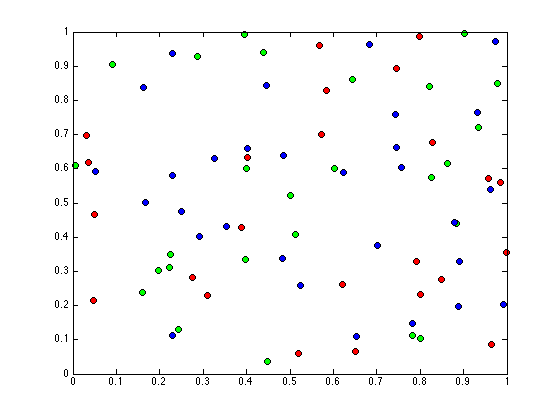
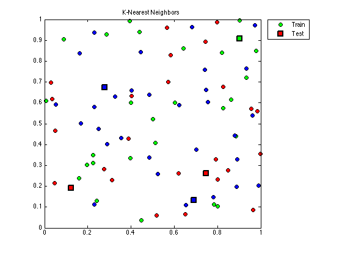

K-Nearest Neighbors
Ejemplo de la implementación del algoritmo de K-Vecinos m??s Cercanos
Contents
clc
clear all
Datos
Para la clasificaci?n por medio de los K-Vecinos m? Cercanos se necesitan los siguientes datos:
- Datos de entrenamiento: Los datos conocidos previeamente
- Clase de los datos de entrenamiento: La clase a la que pertenece cada dato del conjunto de entrenamiento.
- K: N??mero de Vecinos m? Cercanos utilizados en la clasificaci??n.
- Datos de prueba: Los datos que se desean clasificar.
Datos de Entrenamiento. Se eligen 80 datos al azar para el conjunto de datos de entrenamiento
nTrainData = 80; trainData = rand(2,nTrainData);
Clases. Para este ejemplo se eligieron colores (rojo, verde, azul, magenta) para representar las clases que se va clasificar. Para obtener el tipo de clase a la que pertenecen los datos del conjunto de prueba se obtienen aleatoriamente los valores de cada uno.
colorClass = {'r','g','b','m'};
trainClass = randi(3,1,nTrainData); % 80 n??meros entre 1 y 3
Datos de Prueba. Se eligien aleatoriamente los datos de prueba que ser calsificados
nTestData = 5; testData = rand(2,nTestData);
K. K debe ser un n??mero entero positivo de valor menor o igual que el n??ero total de datos de entrenamiento.
K = 3;
Variables
[~, trainM] = size(trainData); [~, testM] = size(testData); distancias = zeros(testM,trainM); distanciasOrdenadas = zeros(testM,trainM);
Distancia (Euclideana)
Se calcula la distancia entre el punto de prueba y cada uno de los puntos del conjunto de entrenamiento por medio de la distancia euclideana.
for i=1:testM for j=1:trainM; distancias(i,j) = pdist([trainData(:,j)'; testData(:,i)']); end end
Distancias Ordenadas
Se ordenan todas las distancias de menor a mayor para obtener los puntos m??s cercanos. Se guarda tambi??n el lugar donde se encuentran los puntos m??s cercanos.
for i=1:testM [orden, ind] = sort(distancias(i,:)); indice(i,:) = ind; distanciasOrdenadas(i,:) = orden; end
K-Nearest Neighbors
Se eligen ??nicamente los K-Vecinos m??s cercanos. Sus correspondientes clases por medio del ??ndice guardado anteriormente.
indiceKNN = indice(:,1:K); K_NN = zeros(2,K,testM); for i=1:testM for j=1:K K_NN(:,j,i) = trainData(:,indiceKNN(i,j))'; end end
Se obtienen las clases que corresponden a cada uno de los K-Vecinos m??s cercanos encontrados anteriormente
trainClass = trainClass'; testClassTemp = trainClass(indiceKNN);
Clasificaci??nn
Se calcula la clase que m??s se repite en el conjunto de K-clases de cada punto para determinar a qu?? clase pertenecen.
Class = unique(testClassTemp); nClass = length(Class); for i = 1:nClass contClass(i,:) = sum((testClassTemp == Class(i)),2); % Filas end [~, indiceMax] = max(contClass); testClass = Class(indiceMax);
Gr??ficas
Datos de Entrenamiento
figure(1); for i=1:trainM A = trainData(:, i); trainPlot = plot(A(1,:), A(2,:),'o',... 'MarkerEdgeColor', 'k',... 'MarkerFaceColor', colorClass{trainClass(i)},... 'MarkerSize', 7); hold on; end
Datos de Prueba. Se grafican los datos de prueba sobre la gr??ica anterior, los 80 datos de prueba son representados por c??culos y los 5 datos de prueba por cuadrados.
for i=1:testM A = testData(:, i); testPlot = plot(A(1,:), A(2,:), 's',... 'LineWidth',2,... 'MarkerEdgeColor', 'k',... 'MarkerFaceColor',colorClass{testClass(i)},... 'MarkerSize', 10); hold on; end legend([trainPlot, testPlot],'Train', 'Test',... 'Location','NorthEastOutside'); title('K-Nearest Neighbors'); hold off;
En esta gr??ica los datos de prueba ya han sido clasificados y aparecen con el color correspondiende a su clase segun sus K-Vecinos m??s cercanos, en la siguietne gr??ica se visualizan de mejor forma estos puntos.
K-Vecinos m??s Cercanos Se utiliza la funci??n patch para dibujar las distancias de los K-Vecinos m??s Cercanos.
for i=1:testM % V??rtices puntos(:,:,i) = [testData(:,i)'; K_NN(:,:,i)']; verts = puntos(:,:,i); % Distancia for j=2:K+1 dist = [1 j]; % Propiedades de patch distancia.Vertices = verts; distancia.Faces = dist; distancia.FaceColor = 'none'; distancia.LineStyle = ':'; distancia.Edgecolor = 'black'; distancia.LineWidth = 1; patch(distancia); % N??mero de cada punto de prueba a = testData(:,i)'; text(a(1)+0.03,a(2)+0.03, num2str(i)); end end